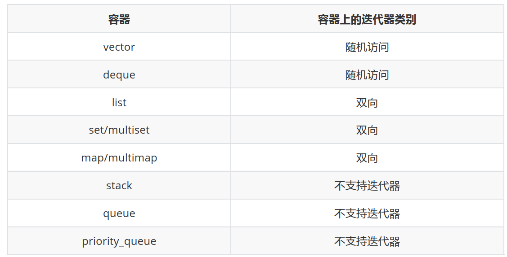

cpp_stl
1、Vector扩容，什么情况1.5倍，什么情况2倍？¶
vector 在插入新的元素时，但是之前的内存已经满的时候需要扩容，在VS下是1.5倍，在GCC 下是2 倍。
2、Vector的resize和reserve有什么区别？¶
- resize:
resize(n)会改变vector的大小，使其包含n个元素。如果n大于当前的大小，那么新的元素会被添加到vector的末尾，如果n小于当前的大小，那么末尾的元素会被删除。resize会改变vector的size()。 - reserve:
reserve(n)不会改变vector的大小，它只是预先分配足够的内存，以便在未来可以容纳n个元素。reserve不会改变vector的size()，但可能会改变capacity()。reserve的主要目的是为了优化性能，避免在添加元素时频繁进行内存分配。
简单来说，resize改变的是vector中元素的数量，而reserve改变的是vector的内存容量。
3、vector中push_back和emplace_back的区别？¶
emplace_back通常在性能上优于push_back，因为它可以避免不必要的复制或移动操作。
- push_back() 向容器尾部添加元素时，首先会创建这个元素，然后再将这个元素拷贝或者移动到容器中（如果是拷贝的话，事后会自行销毁先前创建的这个元素）
- 而emplace_back() 在实现时，则是直接在容器尾部创建这个元素，省去了拷贝或移动元素的过程。
4、Map，set，unordered_map，unordered_set，底层是用了什么数据结构？¶
- Map: 底层实现通常是红黑树，这是一种自平衡的二叉查找树。它可以保证插入、删除和查找的时间复杂度都是O(log n)。
- Set: 与Map类似，Set的底层实现通常也是红黑树。Set是一种特殊的Map，只有键没有值。
- Unordered_map: 底层实现通常是哈希表。哈希表可以提供平均时间复杂度为O(1)的查找。
- Unordered_set: 与Unordered_map类似，Unordered_set的底层实现通常也是哈希表。Unordered_set是一种特殊的Unordered_map，只有键没有值。
5、hash_map和map区别¶
- 构造函数：hash_map需要hash函数，等于函数；map只需要比较函数(小于函数)
- 存储结构：hash_map采用hash表存储，map一般采用红黑树(RB Tree)实现。因此其memory数据结构是不一样的
8、请说说 STL 的基本组成部分¶
标准模板库（Standard Template Library,简称STL）简单说，就是一些常用数据结构和算法的模板的 集合。
广义上讲，STL分为3类：Algorithm（算法）、Container（容器）和Iterator（迭代器），容器和算 法通过迭代器可以进行无缝地连接。
详细的说，STL由6部分组成：容器(Container)、算法（Algorithm）、 迭代器（Iterator）、仿函数 （Function object）、适配器（Adaptor）、空间配置器（Allocator）。
标准模板库STL主要由6大组成部分： 1. 容器(Container) 是一种数据结构， 如list, vector, 和deques，以模板类的方法提供。为了访问容器中的数据，可 以使用由容器类输出的迭代器。 2. 算法（Algorithm） 是用来操作容器中的数据的模板函数。例如，STL用sort()来对一 个vector中的数据进行排序， 用find()来搜索一个list中的对象， 函数本身与他们操作的数据的结构和类型无关，因此他们可以 用于从简单数组到高度复杂容器的任何数据结构上。 3. 迭代器（Iterator） 提供了访问容器中对象的方法。例如，可以使用一对迭代器指定list或vector中的一定范围的对 象。 迭代器**就如同一个指针**。事实上，C++ 的指针也是一种迭代器。 但是，迭代器也可以是那些 定义了operator*()以及其他类似于指针的操作符方法的类对象; 4. 仿函数（Function object） 仿函数又称之为函数对象， 其实就是**重载了操作符的struct**,没有什么特别的地方。 5. 适配器（Adaptor） 简单的说就是一种**接口类**，专门用来**修改现有类的接口**，提供一中新的接口；或调用现有的函 数来实现所需要的功能。主要包括3中适配器**Container Adaptor、Iterator Adaptor、Function** Adaptor。 6. 空间配制器（Allocator） 为STL提供空间配置的系统。其中主要工作包括两部分： （1）对象的创建与销毁； （2）内存的获取与释放。
11、请说说 STL 中常见的容器，并介绍一下实现原理¶
容器可以用于**存放各种类型的数据（基本类型的变量，对象等）的数据结构，都是模板类**，分为顺序 容器、关联式容器、容器适配器三种类型，三种类型容器特性分别如下：
- 顺序容器
容器并非排序的，元素的插入位置同元素的值无关。包含vector、deque、list，具体实现原理 如下： （1）vector 头文件 动态数组。元素在内存连续存放。随机存取任何元素都能在常数时间完成。在尾端增删元 素具有较佳的性能。 （2）deque 头文件 双向队列。元素在内存连续存放。随机存取任何元素都能在常数时间完成（仅次于vector）。在 两端增删元素具有较佳的性能（大部分情况下是常数时间）。 （3）list 头文件 双向链表。元素在内存**不连续**存放。在任何位置增删元素都能在常数时间完成。不支持随机 存取。
-
关联式容器 元素是排序的；插入任何元素，都按相应的排序规则来确定其位置；在查找时具有非常好的性 能；通常以平衡二叉树的方式实现。包含set、multiset、map、multimap，具体实现原理如下： （1）set/multiset 头文件 set 即集合。set中不允许相同元素，multiset中允许存在相同元素。 （2）map/multimap 头文件 map与set的不同在于map中存放的元素有且仅有两个成员变量，一个名为first,另一个名为 second, map根据first值对元素从小到大排序，并可快速地根据first来检索元素。 注意：map同multimap的不同在于是否允许相同first值的元素。
-
容器适配器
封装了一些基本的容器，使之具备了新的函数功能，比如把deque封装一下变为一个具有stack 功能的数据结构。这新得到的数据结构就叫适配器。包含**stack,queue,priority_queue**，具体实现 原理如下： （1）stack 头文件 栈是项的有限序列，并满足序列中被删除、检索和修改的项只能是最进插入序列的项（栈顶 的项）。后进先出。 （2）queue 头文件 队列。插入只可以在尾部进行，删除、检索和修改只允许从头部进行。先进先出。 （3）priority_queue 头文件 优先级队列。内部维持某种有序，然后确保优先级最高的元素总是位于头部。最高优先级元 素总是第一个出列。
14、map hashtable deque list 的实现原理¶
map、hashtable、deque、list实现机理分别为红黑树、函数映射、双向队列、双向链表，他们的特 性分别如下：
-
map实现原理 map内部实现了一个**红黑树**（红黑树是非严格平衡的二叉搜索树，而AVL是严格平衡二叉搜索 树），红黑树有自动排序的功能，因此**map内部所有元素都是有序的**，红黑树的每一个节点都代 表着map的一个元素。因此，对于map进行的查找、删除、添加等一系列的操作都相当于是对红 黑树进行的操作。map中的元素是按照二叉树（又名二叉查找树、二叉排序树）存储的，特点就 是左子树上所有节点的键值都小于根节点的键值，右子树所有节点的键值都大于根节点的键值。使 用**中序遍历可将键值按照从小到大遍历出来**。
-
hashtable（也称散列表，直译作哈希表）实现原理 hashtable采用了**函数映射的思想，记录的存储位置与记录的关键字关联起来**，从而能够很快速地 进行查找。这决定了哈希表特殊的数据结构，它同数组、链表以及二叉排序树等相比较有很明显的 区别，它**能够快速定位到想要查找的记录，而不是与表中存在的记录的关键字进行比较来进行查** 找。
- deque实现原理 deque内部 现的是一个双向队列。元素在内存连续存放。随机存取任何元素都在常数时间完成 （仅次于vector）。所有适用于vector的操作都适用于deque。在两端增删元素具有较佳的性能 （大部分情况下是常数时间）。
- list实现原理 list内部实现的是一个双向链表。元素在内存不连续存放。在**任何位置增删元素都能在常数时间** 完成。不支持随机存取。无成员函数，给定一个下标i，访问第i个元素的内容，只能从头部挨个遍 历到第i个元素。
16、请你来介绍一下 STL 的空间配置器（allocator）¶
一般情况下,一个程序包括数据结构和相应的算法，而**数据结构作为存储数据的组织形式，与内存空间** 有着密切的联系。在C++ STL中，空间配置器便是用来实现内存空间(一般是内存，也可以是硬盘等空间) 分配的工具，他与容器联系紧密，每一种容器的空间分配都是通过空间分配器allocator实现的。
答案解析
- 两种C++类对象实例化方式的异同 在c++中，创建类对象一般分为两种方式：一种是**直接利用构造函数**,直接构造类对象，如 Test test()；另一种是**通过new来实例化**一个类对象，如 Test pTest = new Test；那么，这两种方式有 什么异同点呢？ 我们知道，内存分配主要有三种方式： （1） 静态存储区分配：内存在**程序编译的时候已经分配好，这块内存在程序的整个运行空间内都* 存在。如全局变量,静态变量等。 （2） 栈空间分配：程序在运行期间，函数内的局部变量通过栈空间来分配存储（函数调用栈）， 当函数执行完毕返回时，相对应的栈空间被立即回收。主要是局部变量。 （3）堆空间分配：程序在运行期间，通过在堆空间上为数据分配存储空间，通过malloc和new创 建的对象都是从堆空间分配内存，这类空间需要程序员自己来管理，必须通过free()或者是delete() 函数对堆空间进行释放，否则会造成内存溢出。
那么，从**内存空间分配的角度**来对这两种方式的区别，就比较容易区分: （1）对于第一种方式来说，是直接通过调用Test类的构造函数来实例化Test类对象的,如果该实例 化对象是一个局部变量，则其是在**栈空间**分配相应的存储空间。 （2）对于第二种方式来说,就显得比较复杂。这里主要以new类对象来说明一下。new一个类对象, 其实是执行了两步操作：首先,调用new在堆空间分配内存,然后调用类的构造函数构造对象的内 容；同样，使用delete释放时，也是经历了两个步骤：首先调用类的析构函数释放类对象，然后调 用delete释放**堆**空间。
-
C++ STL空间配置器实现
很容易想象，为了实现空间配置器，完全可以利用new和delete函数并对其进行封装实现STL的 空间配置器，的确可以这样。但是，为了最大化提升效率，SGI STL版本并没有简单的这样做，而 是采取了一定的措施，实现了更加高效复杂的空间分配策略。由于以上的构造都分为两部分，所 以，在SGI STL中，将对象的构造切分开来，分成空间配置和对象构造两部分。 内存配置操作: 通过alloc::allocate()实现 内存释放操作: 通过alloc::deallocate()实现 对象构造操作: 通过::construct()实现 对象释放操作: 通过::destroy()实现 关于内存空间的配置与释放，SGI STL采用了两级配置器：一级配置器主要是考虑**大块**内存空 间，利用**malloc和free**实现；二级配置器主要是考虑**小块内存**空间而设计的（为了最大化解决内存 碎片问题，进而提升效率），采用**链表free_list来维护内存池**（memory pool），free_list通过 union结构实现，空闲的内存块互相挂接在一块，内存块一旦被使用，则被从链表中剔除，易于维 护。
18、STL 容器用过哪些，查找的时间复杂度是多少，为什么？¶
参考回答 STL中常用的容器有vector、deque、list、map、set、multimap、multiset、unordered_map、 unordered_set等。容器底层实现方式及时间复杂度分别如下：
- vector 采用一维数组实现，元素在内存连续存放，不同操作的时间复杂度为： 插入: O(N) 查看: O(1) 删除: O(N)
- deque 采用双向队列实现，元素在内存连续存放，不同操作的时间复杂度为： 插入: O(N) 查看: O(1) 删除: O(N)
- list 采用双向链表实现，元素存放在堆中，不同操作的时间复杂度为： 插入: O(1) 查看: O(N) 删除: O(1)
- map、set、multimap、multiset 上述四种容器采用红黑树实现，红黑树是平衡二叉树的一种。不同操作的时间复杂度近似为: 插入: O(logN) 查看: O(logN) 删除: O(logN)
- unordered_map、unordered_set、unordered_multimap、 unordered_multiset 上述四种容器采用哈希表实现，不同操作的时间复杂度为： 插入: O(1)，最坏情况O(N) 查看: O(1)，最坏情况O(N) 删除: O(1)，最坏情况O(N)
注意：容器的时间复杂度取决于其底层实现方式。
21、迭代器用过吗？什么时候会失效？¶
用过，常用容器迭代器失效情形如下。
- 对于序列容器vector，deque来说，使用erase后，后边的每个元素的迭代器都会失效，后边每个 元素都往前移动一位，erase返回下一个有效的迭代器。
- 对于关联容器map，set来说，使**用了erase后，当前元素的迭代器失效**，但是其结构是红黑树， 删除当前元素，不会影响下一个元素的迭代器，所以在调用erase之前，记录下一个元素的迭代器 即可。
- 对于list来说，它**使用了不连续分配的内存**，并且它的erase方法也会返回下一个有效的迭代器，因 此上面两种方法都可以使用。
24、说一下STL中迭代器的作用，有指针为何还要迭代器？¶
-
迭代器的作用 （1）用于指向顺序容器和关联容器中的元素 （2）通过迭代器可以读取它指向的元素 （3）通过非const迭代器还可以修改其指向的元素
-
迭代器和指针的区别 迭代器不是指针，是类模板，表现的像指针。他只是模拟了指针的一些功能，重载了指针的一 些操作符，→、++、--等。迭代器封装了指针，是一个”可遍历STL（ Standard Template Library）容器内全部或部分元素”的对象，本质是封装了原生指针，是指针概念的一种提升，提供 了**比指针更高级**的行为，相当于一种智能指针，他可以根据不同类型的数据结构来实现不同的 ++，--等操作。 迭代器返回的是对象引用而不是对象的值，所以cout只能输出迭代器使用取值后的值而不能直 接输出其自身。
-
迭代器产生的原因 Iterator类的访问方式就是**把不同集合类的访问逻辑抽象出来，使得不用暴露集合内部的结构而** 达到循环遍历集合的效果。
答案解析
- 迭代器 Iterator（迭代器）模式又称游标（Cursor）模式，用于提供一种方法顺序访问一个聚合对象中 各个元素, 而又不需暴露该对象的内部表示。 或者这样说可能更容易理解：Iterator模式是运用于 聚合对象的一种模式，通过运用该模式，使得我们可以在不知道对象内部表示的情况下，按照一定 顺序（由iterator提供的方法）访问聚合对象中的各个元素。 由于Iterator模式的以上特性：与聚 合对象耦合，在一定程度上限制了它的广泛运用，一般仅用于底层聚合支持类，如STL的list、 vector、stack等容器类及ostream_iterator等扩展Iterator。
#include <vector>
#include <iostream>
using namespace std;
int main() {
vector<int> v; //一个存放int元素的数组，一开始里面没有元素
v.push_back(1);
v.push_back(2);
v.push_back(3);
v.push_back(4);
vector<int>::const_iterator i; //常量迭代器
for (i = v.begin(); i != v.end(); ++i) //v.begin()表示v第一个元素迭代器指针，++i
指向下一个元素
cout << *i << ","; //*i表示迭代器指向的元素
cout << endl;
vector<int>::reverse_iterator r; //反向迭代器
for (r = v.rbegin(); r != v.rend(); r++)
cout << *r << ",";
cout << endl;
vector<int>::iterator j; //非常量迭代器
for (j = v.begin();j != v.end();j++)
*j = 100;
for (i = v.begin();i != v.end();i++)
cout << *i << ",";
return 0;
}
/*
运行结果：
1,2,3,4,
4,3,2,1,
100,100,100,100,
*/
27、说说 STL 迭代器是怎么删除元素的¶
参考回答 这是主要考察迭代器失效的问题。
- 对于序列容器vector，deque来说，使用erase后，后边的每个元素的迭代器都会失效，后边每个 元素都往前移动一位，erase返回下一个有效的迭代器；
- 对于关联容器map，set来说，使用了erase后，当前元素的迭代器失效，但是其结构是红黑树， 删除当前元素，不会影响下一个元素的迭代器，所以在**调用erase之前，记录下一个元素的迭代器** 即可；
- 对于list来说，它**使用了不连续分配的内存，并且它的erase方法也会返回下一个有效的迭代器**，因 此上面两种方法都可以使用。

30、 说说 STL 中 resize 和 reserve 的区别¶
- 首先必须弄清楚两个概念： （1）capacity：该值在容器初始化时赋值，指的是容器能够容纳的最大的元素的个数。还不能通 过下标等访问，因为此时容器中还没有创建任何对象。 （2）size：指的是此时容器中**实际**的元素个数。可以通过下标访问0-(size-1)范围内的对象。
- resize和reserve区别主要有以下几点： （1）resize既分配了空间，也创建了对象；reserve表示容器预留空间，但并不是真正的创建对 象，需要通过insert（）或push_back（）等创建对象。 （2）resize既修改capacity大小，也修改size大小；reserve只修改capacity大小，不修改size大 小。 （3）两者的形参个数不一样。 resize带两个参数，一个表示容器大小，一个表示初始值（默认为 0）；reserve只带一个参数，表示容器预留的大小。
答案解析
resize 和 reserve 既有差别，也有共同点。两个接口的**共同点**是它们都保证了**vector的空间大小** (capacity)最少达到它的参数所指定的大小。下面就他们的细节进行分析。
为实现resize的语义，resize接口做了两个保证： （1）保证区间[0, new_size)范围内数据有效，如果下标index在此区间内，vector[index]是合法 的； （2）保证区间[0, new_size)范围以外数据无效，如果下标index在区间外，vector[index]是非法 的。 reserve只是保证vector的空间大小(capacity)最少达到它的参数所指定的大小n。在区间[0, n)范围 内，如果下标是index，vector[index]这种访问有可能是合法的，也有可能是非法的，视具体情况而 定。
void resize(size_type new_size)
{
resize(new_size, T());
}
void resize(size_type new_size, const T& x)
{
if (new_size < size())
erase(begin() + new_size, end()); // erase区间范围以外的数据，确保区间以外的数
据无效
else
insert(end(), new_size - size(), x); // 填补区间范围内空缺的数据，确保区间内的
数据有效
}
#include<iostream>
#include<vector>
using namespace std;
int main()
{
vector<int> a;
cout<<"initial capacity:"<<a.capacity()<<endl;
cout<<"initial size:"<<a.size()<<endl;
/*resize改变capacity和size*/
a.resize(20);
cout<<"resize capacity:"<<a.capacity()<<endl;
cout<<"resize size:"<<a.size()<<endl;
vector<int> b;
/*reserve改变capacity,不改变resize*/
b.reserve(100);
cout<<"reserve capacity:"<<b.capacity()<<endl;
cout<<"reserve size:"<<b.size()<<endl;
return 0;
}
/*
运行结果：
initial capacity:0
initial size:0
resize capacity:20
resize size:20
reserve capacity:100
reserve size:0
*/
注意：如果n大于当前的vector的容量(是容量，并非vector的size)，将会引起自动内存分配。所以现 有的pointer,references,iterators将会失效。而内存的重新配置会很耗时间。
32、说说 STL 容器动态链接可能产生的问题？¶
参考回答
- 可能产生 的问题 容器是一种动态分配内存空间的一个变量集合类型变量。在一般的程序函数里，局部容器，参 数传递容器，参数传递容器的引用，参数传递容器指针都是可以正常运行的，而在动态链接库函数 内部使用容器也是没有问题的，但是给动态库函数传递容器的对象本身，则会出现内存堆栈破坏的 问题。
- 产生问题的原因 容器和动态链接库相互支持不够好，动态链接库函数中使用容器时，参数中只能传递容器的引用， 并且要保证容器的大小不能超出初始大小，否则导致容器自动重新分配，就会出现内存堆栈破坏问 题。
34、说说 map 和 unordered_map 的区别？底层实现¶
map和unordered_map的区别在于他们的实现基理不同。 1. map实现机理 map内部实现了一个**红黑树**（红黑树是**非严格平衡的二叉搜索树**，而**AVL是严格平衡二叉搜索** 树），红黑树有自动排序的功能，因此map内部所有元素都是**有序**的，红黑树的每一个节点都代 表着map的一个元素。因此，对于map进行的查找、删除、添加等一系列的操作都相当于是对红 黑树进行的操作。map中的元素是按照二叉树（又名二叉查找树、二叉排序树）存储的，特点就 是左子树上所有节点的键值都小于根节点的键值，右子树所有节点的键值都大于根节点的键值。使 用中序遍历可将键值按照从小到大遍历出来。 2. unordered_map实现机理 unordered_map内部实现了一个哈希表（也叫散列表），通过**把关键码值映射到Hash表中一个位** 置来访问记录，查找时间复杂度可达O（1） ，其中在海量数据处理中有着广泛应用。因此，元素 的排列顺序是无序的。
38、说说 vector 和 list 的区别，分别适用于什么场景？¶
vector和list区别在于底层实现机理不同，因而特性和适用场景也有所不同。
vector：一维数组 特点：元素在内存**连续存放**，动态数组，在堆中分配内存，元素连续存放，有保留内存，如果减少大小后内存也不会释放。 优点：和数组类似开辟一段连续的空间，并且**支持随机访问**，所以它的**查找效率高其时间复杂度O(1)** 。 缺点：由于开辟一段连续的空间，所以**插入删除会需要对数据进行移动比较麻烦，时间复杂度O（n）** ，另外当空间不足时还需要进行扩容。
list：双向链表 特点：元素在堆中存放，每个元素都是存放在一块内存中，它的内存空间可以是**不连续的**，通过指针 来进行数据的访问。 优点：底层实现是循环双链表，当对**大量数据进行插入删除时，其时间复杂度O(1)** 。 缺点：底层没有连续的空间，只能通过指针来访问，所以**查找数据需要遍历其时间复杂度O（n）** ， 没有提供[]操作符的重载。
应用场景 vector拥有一段连续的内存空间，因此支持随机访问，如果需要高效的随即访问，而不在乎插入和删 除的效率，使用vector。 list拥有一段不连续的内存空间，如**果需要高效的插入和删除，而不关心随机访问，则应使用list**。
41、简述 vector 的实现原理¶
vector底层实现原理为**一维数组**（元素在空间连续存放）。
- 新增元素 Vector通过一个连续的数组存放元素，如果**集合已满**，在新增数据的时候，就要**分配一块更大** 的内存，将原来的数据复制过来，释放之前的内存，再插入新增的元素。插入新的数据分在最后插 入push_back和通过迭代器在任何位置插入，这里说一下通过迭代器插入，通过**迭代器与第一个元** 素的距离知道要插入的位置，即int index=iter-begin() 。这个元素后面的所有元素都向后移动一个 位置，在空出来的位置上存入新增的元素。K
//新增元素
void insert(const_iterator iter,const T& t )
{
int index=iter-begin();
if (index<size_)
{
if (size_==capacity_)
{
int capa=calculateCapacity();
newCapacity(capa);
}
memmove(buf+index+1,buf+index,(size_-index)*sizeof(T));
buf[index]=t;
size_++;
}
}
- 删除元素 删除和新增差不多，也分两种，删除最后一个元素pop_back和通过迭代器删除任意一个元素 erase(iter)。通过迭代器删除还是先找到要删除元素的位置，即int index=iter-begin();这个位置后 面的每个元素都向前移动一个元素的位置。同时我们知道erase不释放内存只初始化成默认值。
删除全部元素clear：只是循环调用了erase，所以删除全部元素的时候，不释放内存。内存是在 析构函数中释放的。
//删除元素
iterator erase(const_iterator iter)
{
int index=iter-begin();
if (index<size_ && size_>0)
{
memmove(buf+index ,buf+index+1,(size_-index)*sizeof(T));
buf[--size_]=T();
}
return iterator(iter);
}
- 迭代器iteraotr 迭代器iteraotr是STL的一个重要组成部分,通过iterator可以很方便的存储集合中的元素.STL为每个 集合都写了一个迭代器, 迭代器其实是对一个指针的包装,实现一些常用的方法,如++,--,!=,==,*,->等, 通过这些方法可以找到当前元素或是别的元素. vector是STL集合中比较特殊的一个,因为vector中 的每个元素都是连续的,所以在自己实现vector的时候可以用指针代替。
//迭代器的实现
template<class _Category,class _Ty,class _Diff = ptrdiff_t,class _Pointer =
_Ty *,class _Reference = _Ty&>
struct iterator
{
// base type for all iterator classes
typedef _Category iterator_category;
typedef _Ty value_type;
typedef _Diff difference_type;
typedef _Diff distance_type; // retained
typedef _Pointer pointer;
typedef _Reference reference;
};
43、简述 STL 中的 map 的实现原理¶
map是关联式容器，它们的底层容器都是**红黑树**。map 的所有元素都是 pair，同时拥有实值 （value）和键值（key）。pair 的第一元素被视为键值，第二元素被视为实值。所有元素都会根据元素 的**键值自动被排序**。不允许键值重复。
- map的特性如下 （1）map以RBTree作为底层容器； （2）所有元素都是键+值存在； （3）不允许键重复； （4）所有元素是通过键进行自动排序的； （5）map的键是不能修改的，但是其键对应的值是可以修改的。
46、C++ 的 vector 和 list中，如果删除末尾的元素，其指针和迭代器如何变化？若删除的是中间的元素呢？¶
- 迭代器和指针之间的区别 迭代器不是指针，是类模板，表现的像指针。他只是**模拟**了指针的一些**功能**，重载**了指针的一 些**操作符，→、++、--等。迭代器封装了指针，是一个”可遍历STL（ Standard Template Library）容器内全部或部分元素”的对象，本质是封装了原生指针，是指针概念的一种提升，提供 了比指针更高级的行为，相当于一种智能指针，他**可以根据不同类型的数据结构来实现不同的** ++，--等操作。 迭代器返回的是对象引用而不是对象的值，所以cout只能输出迭代器使用取值后的值而不能直 接输出其自身。
- vector和list特性 vector特性 动态数组。元素在内存连续存放。随机存取任何元素都在常数时间完成。在尾端增 删元素具有较大的性能（大部分情况下是常数时间）。 list特性 双向链表。元素在内存不连续存放。在任何位置增删元素都能在常数时间完成。不支持 随机存取。
-
vector增删元素 对于vector而言，删除某个元素以后，该元素后边的每个元素的迭代器都会失效，后边每个元素都 往前移动一位，erase返回下一个有效的迭代器。
-
list增删元素 对于list而言，删除某个元素，只有“指向被删除元素”的那个迭代器失效，其它迭代器不受任何影 响。
49、请你来说一下 map 和 set 有什么区别，分别又是怎么实现的？¶
- set是一种关联式容器，其特性如下： （1）set以RBTree作为底层容器 （2）所得元素的只有key没有value，value就是key （3）不允许出现键值重复 （4）所有的元素都会被自动排序 （5）不能通过迭代器来改变set的值，因为set的值就是键，set的迭代器是const的
- map和set一样是关联式容器，其特性如下： （1）map以RBTree作为底层容器 （2）所有元素都是键+值存在 （3）不允许键重复 （4）所有元素是通过键进行自动排序的 （5）map的键是不能修改的，但是其键对应的值是可以修改的 综上所述，map和set底层实现都是红黑树；map和set的区别在于map的值不作为键，键和值是 分开的。
52、STL 中 vector 与 list 具体是怎么实现的？常见操作的时间复杂度是多少？¶
参考回答
- vector 一维数组（元素在内存连续存放） 是动态数组，在堆中分配内存，元素连续存放，有保留内存，如果减少大小后，内存也不会释 放；如果新增大小大于当前大小时才会重新分配内存。 扩容方式： a. 倍放开辟三倍的内存 b. 旧的数据开辟到新的内存 c. 释放旧的内存 d. 指向新内存
- list 双向链表（元素存放在堆中） 元素存放在堆中，每个元素都是放在一块内存中，它的内存空间可以是**不连续的**，通过指针来 进行数据的访问，这个特点，使得它**的随机存取变得非常没有效率，因此它没有提供[ ]操作符的重** 载。但是由于链表的特点，它可以很有效的支持任意地方的删除和插入操作。 特点：a. 随机访问不方便 b. 删除插入操作方便
- 常见时间复杂度 （1）vector插入、查找、删除时间复杂度分别为：O(n)、O(1)、O(n)； （2）list插入、查找、删除时间复杂度分别为：O(1)、O(n)、O(1)。